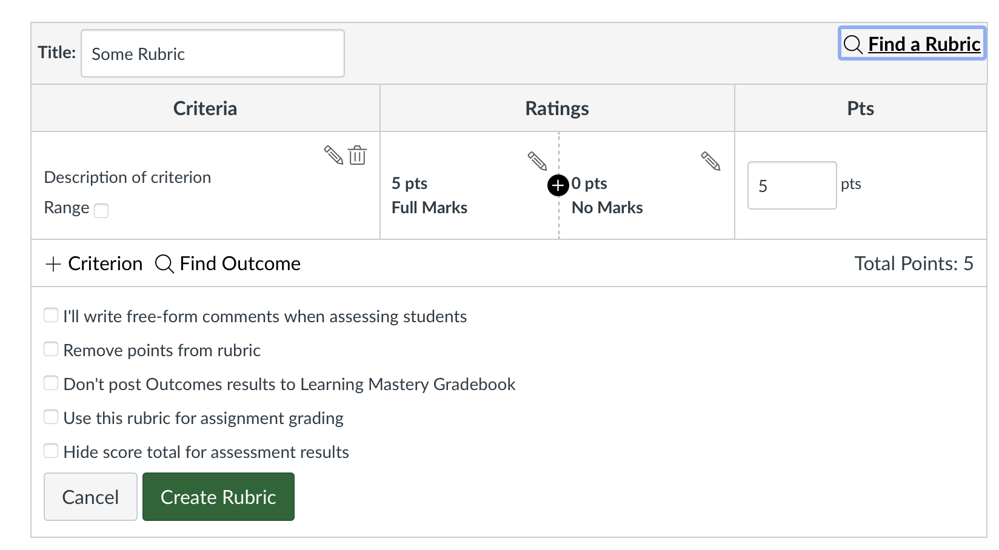

So you’re going to use Canvas

Course setup
Canvas has a pretty good guide on this built in.
Communication
Why use Canvas for communication?
- Always synced up with enrollment, so more reliable than email lists on your computer
- Ability to easily select subgroups of students (e.g., only those who have no submission)
- Storing messages that students may need to refer to again later
Announcements
- Course Announcements will email all your students after you post it. (You do not get a copy of the email yourself.)
- Announcements are good for when you want a record of the communication, e.g., because students may need to refer to it later, or because you want to clearly show that you communicated a deadline etc.
- In Settings, you can turn on an option to show Announcements on the course homepage (like in Blackboard).
Message from gradebook
- This option is useful for sending reminders to submit homework, opportunities to revise, etc.
- Options:
- Have submitted
- Have not yet submitted
- Have not been graded
- Scored less than [point value]
- Scored more than [point value]
- Reassigned
Message from inbox
- The closest thing to the “Send email” button in Blackboard, but
- Actually a Canvas message, which will also get emailed to you/the student, and to which people can reply via email or on Canvas.
- Note that you can’t email a class if the class is unpublished.
Fitting your content into Canvas
- Major difference from Blackboard: Canvas keeps the content you upload in one central location, and reuses that content to fill in different parts of your course. Assignments, modules, gradebook, and syllabus are all interconnected.
- This encourages (forces?) you to use Assignments in a way that Blackboard didn’t.
- Advantage: you are less likely to end up inadvertently giving students conflicting information.
Blackboard migrations

GMU guide on Blackboard migrations
GMU put together a thorough guide on what to watch out for in your migrated course.
Assignment Groups


Assignment Groups
This information then appears on the Assignments page and the Syllabus page.


(because remember these are all linked up)
Assignments
Canvas “Assignments” include
- Assignments
- Discussions
- Quizzes
Gradebook
- Unlike Blackboard, you can’t just create grade columns in the gradebook and enter grades for the students. All grade columns are linked to assignments that you’ve made on Canvas.
- So even for assignments that are on paper or that have no submission, you still need to create those as Assignments in Canvas.
Why you should make Canvas Assignments
This seems annoying probably, but here are the good things:
- Forces a standardization across classes that students appreciate
- You can put those Assignments in their proper Assignment Group to illustrate how the weighting works
- All the Assignments and due dates you enter are all listed on the syllabus automatically.
Same item cross-linked in different places
Assignment submission options
A lot of us probably have “assignments” that would not actually be submitted on Canvas.
When you create an Assignment, you can select how students should submit:
- No submission
- Online
- On paper
- External tool
- Lucid
Assignments submitted online
Select how the students submit:
- Text Entry
- Website URL
- Media Recordings
- Student Annotation
- File Uploads
Note that even if you select multiple submission types, students can only submit one way; they can’t, for example, have a media recording and a file upload in their submission. :(
Media Recording submissions vs File Upload
Media Recording submissions are nice because you can view the submissions in-browser, without downloading files.
You can also request media files as File Uploads, but you will have to download the files to access them.
Plagiarism detection
You can select Turnitin plagiarism detection for assignments that are submitted online that are text entries or file uploads.
Rubrics
After you save an Assignment, you can add a rubric, either new or one that you already made.

Rubric options
- Make sure to check Use this rubric for assignment grading if this is how you are assigning grades!
- I have a tool for bulk-importing rubrics from CSVs, if you’re comfortable with getting a little techy…
Modules
Modules are where you can mix together your Assignments and other material (readings, videos, etc.)
What is a module?

Organizing a module
Here, I’ve put readings at the leftmost indentation level; assignments related to those readings are indented by 1 level to show that “this reading → this assignment”
More help
- Canvas live chat (actually good, I’ve used it a lot)
- Canvas documentation
- GMU
- Megan (mlavengo@gmu.edu)
GMU resources
Canvas resources
All linked under “Help” in left green sidebar
- Email, chat, and phone support (linked on Canvas)
- Training Services Portal
- Instructor Guide